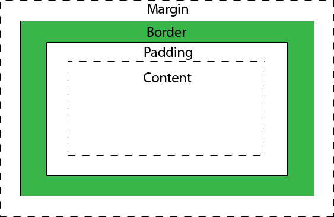

CSS
CSS er forkortelsen af Casacading Style Sheets, selvom HTML understøtter, styles af hjemmesider, så bruger man CSS til at, da selve CSS er lavet som et sprog til at beskrive udseendet af hjemmesiden, det gør det at man bedre kan adskille strukturen og udseendet.
I 1994 udvirkede Håkon Wium Lie CSS, Håkon arbejdede på det tidspunkt på CERN. På det tidspunkt blev internettet brugt som en platform til elektronisk udgivelse, men der manglede en vigtig del da der på ingen måde var mulighed for at style det på.
CSS syntaks
Når man skal starte med at style, bruger man det er hedder en selector. En selector er, hvad der skal styles f.eks.
a { background-color: green;}
Så I dette tilfælde er selector a, man kan sagtens vælge flere der selector, hvis man gerne vil havde at flere elementer på siden skal se ens ud.
Når man så har valgt hvilken selector man skal style laver man declaration eller som Niels sagde Tuborg tegnet eller klemme parentes {. De betyder at her starter man med at definer hvilken type styles man skal bruge, men kan skal huske at når man er færdig med at style den selector så slutter man også med et declaration ( } ) Så skal man vælge hvad man gerne vil style, det kan være alt fra fonten, til størrelsen på fonten, til baggrundsfarven, til om marginen skal havde en bestemt størrelse. Når man så har valgt hvilken styles man går med slutter man med kolon, hvor man så kan vælge ud af hvilken styles man har valgt, f.eks. har jeg valgt at det er baggrundsfarven jeg gerne vil lave om, så kommer er enden en masse farver frem eller så kan man skrive farvekoder i stedet for som kan være:
RGB: rgb (255,204,0)
HSL: hsl (48% 100% 50%)
HEX-kode: #ffcc00
I det man så har fundet den farve man skal bruge, eller valgt den størrelse man vælger, skal man afslutte med semikolon ; for at vise at man er færdig med denne styles, hvis man ikke laver den, kan det betyde at den styles ordre ikke fungerer.
Selectors
Det finde mange selectors men de tre primære er:
- Type/element selector som er de almindelige tags, altså p, h1-h6 og body
- Id selector som er når man har et helt specifikt element man vil style. Man skal huske at man først i HTML skal lave id ved at skrive ‹img id=” og så navnet på id”› og efterfølgende i CSS start med et hashtag og så navnet på id’en.
- Class selector som er til når man style flere elementer af gangen som skal være ens, det vil sige at i HTMLen skal man også mærke de elementer med et tags f.eks. ‹p class=”underoverskrift”›, og derefter i CSS istedetfor hashtag som man skulle i Id, så skal man starte med et punktum .underoverskrift.
Kaskaderegler
I CSS er kaskaderegler meget vigtige. Ved hjælp af dem fortæller man hvilken af reglerne der er vigtigst og hvilken der er mindre vigtigst. Hvis man f.eks. bruger et tag som !important i CSS, så ville den selector om det står ved, havde mest betydning.
Hvis man så ikke bruger !important, så er det altid den tags der står øverste der altid vinder.
Rammerne
Når man er i gang med at style hjemmesiden findes der usynlige rammer, som man kan gøre synlig de er:
- Content som er den inderste. Det er her alt indholdet befinder sig som f.eks. kan være tekst, billede eller grafik.
- Padding som er den næste, det er her man kan bestemme afstanden mellem selve indholdet om rammen. Så indholdet ikke ligger helt op af rammen.
- Border som er selve rammen, her man kan man bestemmer og den skal ses eller være usynlig, og man kan vælge tykkelsen og udseendet om på den.
- Margin , er så afstanden mellem ramme og det element som grænser op til rammen.
Kilder: www.w3schools.com og Niels's undervisning.